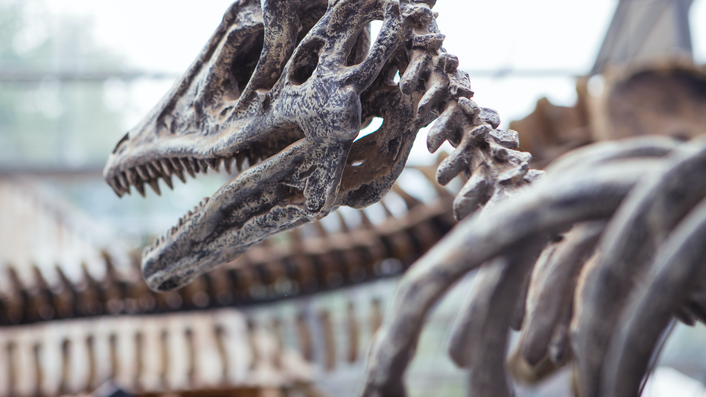

The Weirdest Dinosaurs
Oh Yes, Derpy Inbound
Some dinosaurs were very weird like the Amargasaurus. It was a long neck plant eating dinosaur that had spines all along its neck. Another weird dinosaur was the Pachycephalosaurus, it had a dome of bone on its head that was 9 inches thick Another was the Spinosaurus, it was a large carnivore what had a spine along its back and walked on 4 legs and swam in the water. As you can see, dinosaurs came in many different varieties for many different enviorments.
Spinosaurus Facts
The Spinosauru sis one of my favorite dinosaurs. It was very unique compared to other dinosaurs. it was a semi aquatic one with a large sail on its back. It mainly scavenged and ate fish. It is the largest carivorus dinosaur known currently. It walked on 4 legs and its back legs were rather short. It is indeed a strange dinosaur.